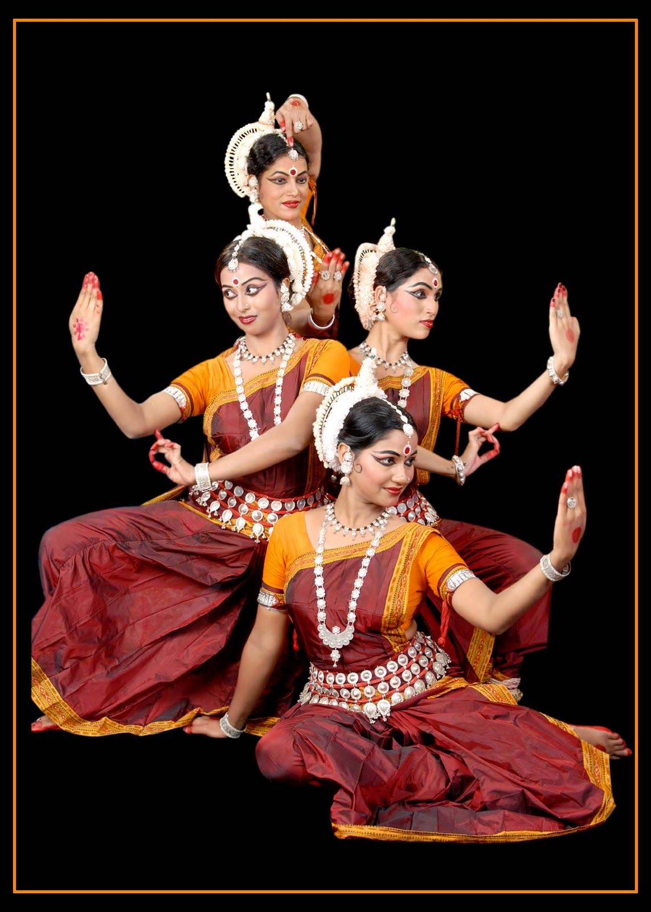
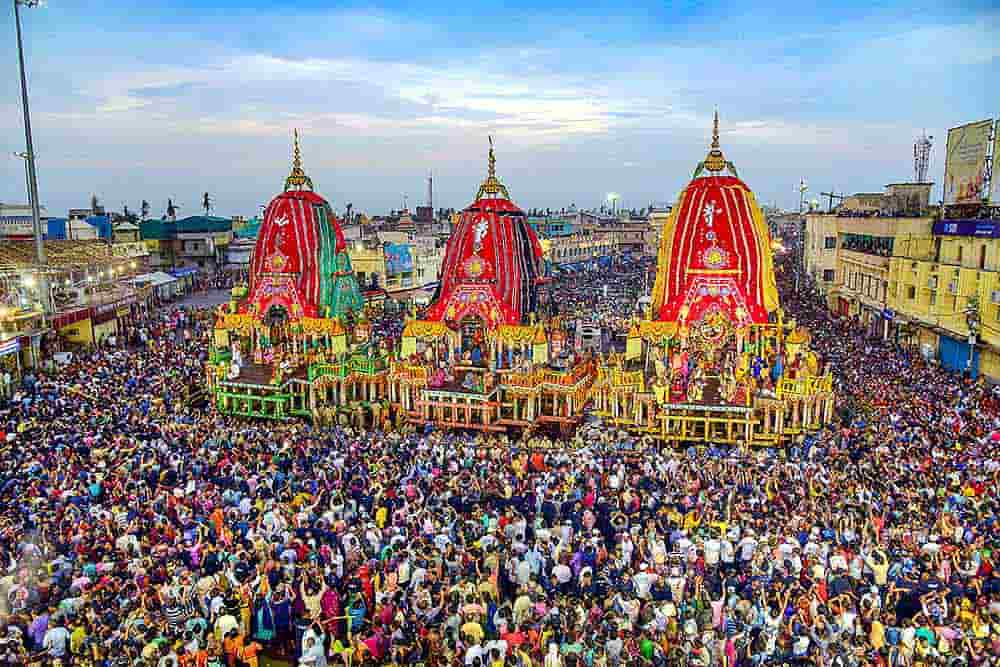

Odissi Dance
Odisha is the birthplace of Odissi, one of India’s classical dance forms. It combines graceful movements, intricate gestures, and storytelling from Hindu mythology.
Odissi is performed during temple rituals, festivals, and cultural events across the state.

Festivals
Odisha is known for vibrant festivals like Rath Yatra, Durga Puja, and Raja Parba. Rath Yatra in Puri attracts thousands of devotees and tourists with grand chariot processions.
These festivals showcase Odisha’s rich folklore, community rituals, and cultural heritage.

Handicrafts & Textiles
Odisha is famous for Pattachitra paintings, applique work, silver filigree, and ikat textiles. Local artisans preserve traditional designs and storytelling through their crafts.
Folk tales, myths, and legends are often depicted in these artworks.

Temples & Heritage
Odisha has majestic temples like Konark Sun Temple and Jagannath Temple in Puri. Temple architecture, rituals, and annual festivals preserve the state’s folklore and traditions.
These sites attract devotees, historians, and tourists interested in Odisha’s cultural heritage.
Culture & Folklore Summary
Odisha’s culture is a unique blend of classical dance, temple rituals, festivals, and handicrafts. Folklore, traditional music, and local legends are preserved through art, dance, and community celebrations. The state remains a vibrant hub of India’s eastern cultural heritage.